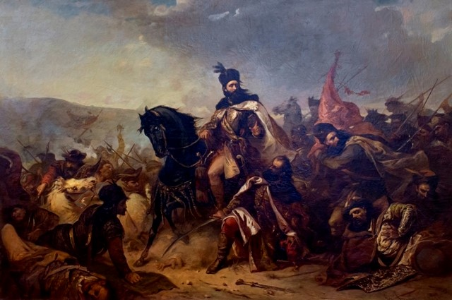

Domnia lui Ștefan cel Mare

Cea mai răspândită și acceptată variantă referitoare la numărul conflictelor armate
(„bătăliilor”) la care a participat Ștefan cel Mare este de 36. Cifra este bazată chiar pe mărturisirea domnului moldovean
făcută în 1502 medicului venețian Matteo Muriano: „eu sunt înconjurat de dușmani din toate părțile și am purtat 36 de lupte
de când sunt domnul acestei țări, dintre care am fost învingător în 34 și am pierdut 2”. Într-o analiză detaliată, istoricul
Alexandru Boldur mai identifică suplimentar alte patru incursiuni armate la care Ștefan nu a participat, acestea fiind conduse
de alți comandanți, numiți de domn.
O clasificare sintetică a tipurilor de conflicte armate, la care a participat oastea moldoveană sub conducerea lui Ștefan cel Mare,
este prezentată în tabelul alăturat. Marile bătălii : ⦁ Bătălia de la Baia Bătălia de la Baia a avut loc în noapte de 14/ 15 decembrie 1467, la aproape o lună de la invadarea Moldovei de către armata
Regatului Ungar condusă de regele Matia Corvin. Campania regelui ungar venea după o serie de incidente care tensionaseră foarte
mult relațiile dintre cele două state, cum ar fi dezvoltara legăturilor cu Regatul Poloniei, incursiunea în secuime din 1461,
cucerirea Chiliei în 1465 și găzduirea de către regele ungar a unor pretendenți la tron, ca Petru Aron sau Berindei. Cauza imediată
a constituit-o sprijinul direct pe care Ștefan îl acordase răscoalei ardelenilor impotriva regelui ungar, din 1467.
Campania a început la 19 noiembrie 1467, odată cu trecerea oastei ungare, numărând circa 40.000 de oșteni, prin pasul Oituz, urmată
de asedierea și distrugerea orașelor Târgu Trotuș, Bacău, Roman și Târgu Neamț. La 7 decembrie armata ungară a ajuns la Baia.
Având în vedere pericolul iminent ca inamicul să atace capitala țării, Suceava, Ștefan decide să execute o lovitură decisivă, prin
surprindere, asupra trupelor ungare cantonate la Baia. Forțele moldovene, de circa 12.000 de oameni au atacat orașul în noapte de 14/ 15
decembrie 1467, din trei direcții, după ce în prealabil au dat foc întăriturilor de lemn care îl protejau. După lupte îndârjite
desfășurate toată noaptea, armata ungară a fost nevoită să abandoneze orașul și să se retragă spre Transilvania, regele Matia însuși
fiind rănit în luptă. Retragerea a fost favorizată și de inacțiunea unuia dintre corpurile de armată moldovene, condus de vornicul
Crasnăș, care ulterior va fi judecat pentru trădare, condamnat la moarte și executat. ⦁ Bătălia de la Codrii Cosminului
Bătălia de la Codrii Cosminului s-a desfășurat între 26-30 octombrie 1497,
lupta principală având loc în Codrii Cosminului, o zonă împădurită situată la
circa 100 km nord de Suceava, pe teritoriul actualele comune Voloca pe Derelui și
Valea Cosminului din regiunea Cernăuți, Ucraina. Bătălia a opus oastea Moldovei,
sub comanda lui Ștefan cel Mare și oastea Uniunii Polono-Lituaniene, comandată de regele Ioan I Albert
Războaie și bătălii